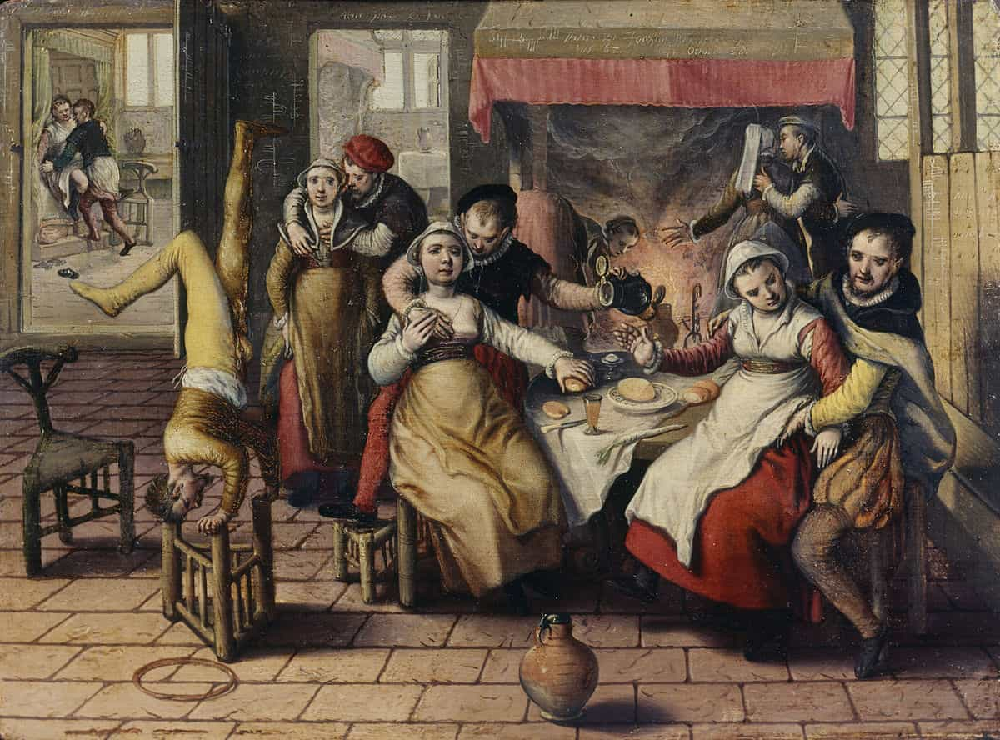

Sten is an internationally renowned social media premium content creator and author of Networking for NEETs. He is known for his acerbic social commentary, effortless synthesis of high and low culture, and patronage of the NEET lifestyle.


Since the days of the Columbine High School massacre, the school shooting has been a frequent fixture in the lives of the American people. Not a year goes by, it seems, in which we are unaffected by one of these violent events. Predictably, the most recent school shooting in Parkland, Florida has summoned the familiar media cries to ban firearm ownership and to castrate our boys via pharmacological means. And predictably, the media has it all wrong.
School shootings are overwhelmingly carried out those boys disadvantaged in today’s sexual marketplace. The school shooting is not the fault of guns or an inherent flaw in the male psyche, but the inevitable result of a contracting sexual marketplace in which female hypergamy is unleashed in terrifying form upon the Western world.
Boys shoot up schools because they’re not getting laid. Time and time again, the perpetrators of these massacres are boys who aren’t getting laid and have no idea how to get laid. From the 2007 Virginia Tech shooting to the 2014 Isla Vista killings, we have witnessed the bottled rage of young men furious at their lack of sexual prospects erupt in real world carnage.
If these massacres are to stop—and it is unlikely they will as society plummets further into matriarchal discord—we need to implement novel and groundbreaking solutions. Here are five ways we can prevent school shootings.
It is no secret that today’s boys are without male role models. Western governments endorse and actively fund single motherhood, robbing many boys of paternal guidance in their most formative years. Furthermore, the vast majority of schoolteachers are women, leaving boys without father figures both at home and at school.
Paternal guidance is essential in the development of boys. Without fathers, boys are more likely to end up in jail or drop out of society altogether. While the rise in single mother households is unavoidable in our current cultural climate, school systems would do well to hire more male teachers.
A male teacher who exhibits genuine masculine values can serve as a role model to wayward boys. Through teaching, he can impart the knowledge and wisdom he has gleaned over the years and guide boys through their difficult adolescence. Likewise, a good coach can function well to impart the virtues of manly discipline and grit to his athletes. It is little surprise that all of these school shooters were not part of a sports team.
Sending boys and girls to separate, sex-segregated schools could work wonders by allowing them to develop lasting friendships with other boys and girls, respectively. The majority of school shooters have been loners and outcasts, and one would do well to ponder if their actions could have been prevented had they but one true friend.
American boarding schools have traditionally existed only in New England, but it would be a welcome addition to have them in other parts of the United States. Here, boys can learn to be boys without the corrupting influences of girls and female schoolteachers. Moreover, boarding schools can arrange events like dances to teach boys and girls proper courtship.
The greatest advantage of these same-sex schools, however, is to give boys and girls access to the wisdom of their older peers. As families get smaller, it is becoming more unlikely that kids grow up with siblings. An Older Brother program implemented by these schools could put boys on the right path by pairing them with an upperclassman to act as their mentor.

In many Latin countries, teenage boys are often brought to brothels to gain their first sexual experience. Although a prostitute will never love you back, casting off the weight of teenage virginity does well for a boy’s self-esteem. It is not unreasonable to state that many school shooters were frustrated at their lack of sexual experience as they entered adulthood.
A safe, regulated brothel system would also compete for attention with the girls in the general population. It is unclear how this has affected the sexual dynamics in countries where prostitution is legal, but their sexual dynamics cannot possibly be worse than what we have here in the United States.
In a best-case scenario, a legitimate brothel system would permit boys to dispel their sexual frustrations and force girls to up their game if they want male attention. If a boy were to graduate high school a virgin and desire sexual experience before he entered university, there would be a well-regulated outlet for his natural urges. However, school shootings are not just about a lack of sex, but about a lack of love as well.
As artificial intelligence continues to improve, it is likely that we will have virtual companions in the near future. While these companions will never usurp the position of a dear friend or loved one, they could potentially function as a makeshift social outlet for the desperately lonely. In less than a decade, we will witness the first iterations of these virtual companions on the market.
Many science fiction films have depicted what these virtual companions could be like. Her (2013) depicted a virtual companion named Samantha, an intelligent female voice that the main character eventually falls in love with. Samantha acted as a friend and trusted confidant to the main character; it is probable that today’s Siri or Alexa could evolve into something similar.
The most compelling depiction of a virtual companion to date, however, is found in Blade Runner 2049 (2017). Here, Joi serves as the fully-customizable holographic girlfriend of the main character. While this technology is still a ways off, putting a human face to these virtual companions could give the lonely some form of—albeit simulated—social interaction.
School shootings all have one thing in common: they occur at schools. Schools have devolved from educating and training the young for adulthood, to indoctrinating kids with far-left ideology and regulating so-called toxic masculine behavior. With e-learning and the vast array of educational materials available on the internet, the days of public schooling are numbered.
The primary function of schools nowadays is to credential the youth for the job market. An employer could instead provide the requisite training or a self-learning program could teach you everything you need to know. Homeschooling is also on the rise, and it tends to produce better-educated students than the public school system.
In the future, school shootings might not even occur because nobody will attend public schools anymore. And that is a future truly worth fighting for.
Read More: How Our Feminized School System Is Crippling Young Boys